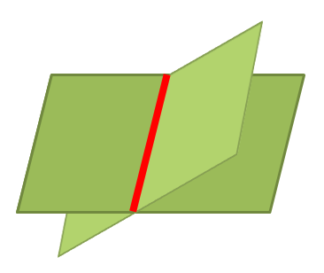

점, 선, 면
점
위치만을 나타내는 도형의 기본 단위. 길이도 잴 수 없고 넓이도 잴 수 없다.
선
점이 움직인 자리는 선이 된다. 선은 직선과 곡선으로 분류되는데, 직선은 곧은 선, 곡선은 굽은 선을 의미한다. 길이만 잴 수 있고 넓이는 잴 수 없다.
면
선이 움직인 자리는 면이 된다. 면은 평면과 곡면으로 분류되는데, 평면은 곧은 면, 곡면은 굽은 면을 의미한다. 길이와 넓이 모두 잴 수 있다.
교점
선과 선 또는 면과 선이 만나서 생기는 점을 교점이라고 한다.

교선
면과 면이 만나서 생기는 선을 교선이라고 한다.
